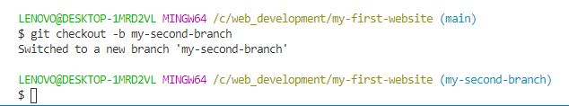

I am practising to edit and to push many times.
Yay! I am at my second branch. I have created it and switched in it by "checkout -b" guit command. Now, I am going to push it in my github.
I have learned how to creaate a new repository and do first steps like initialization, origin commands etc. adding, commiting and pushing codes into it. All these happanes in default master or main branch. I have now lreaned how to create a new branch, and to push it to the github.